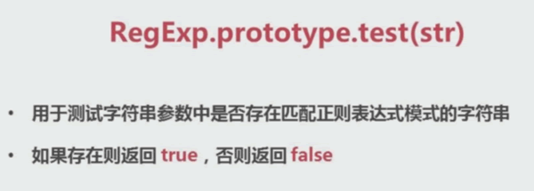
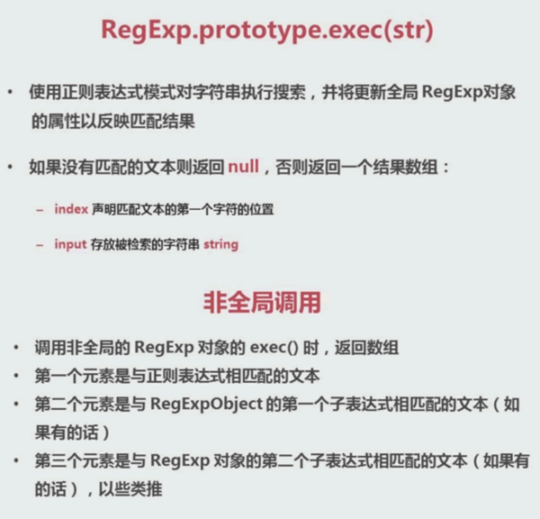

正则表达式本身的两个方法
1.test
RegExp.prototype.test(str)
用于测试字符串参数中是否存在匹配正则表达式模式的字符串，如果存在则返回true，否则返回false
lastIndex 记录当前匹配结果的、最后一个字符的、下一个字符的位置
注意:test()方法在匹配的时候当匹配到一个结果时，会从lastIndex位置开始匹配下一个结果，直到不存在的时候才置为0。因此，当使用全局g属性标识时，当匹配到最后一个结果时，lastIndex值指向不存在的位置，此时再执行test()会返回false。
例子：多次执行test（）方法，会在true、false之间循环
（/\w/g）.test('a')每次执行都是正确的，但是通过实例化对象，需要很大的开销
test()方法：原意就是测试有没有、能不能匹配上，当使用test原意时，没必要加g
2.exec
RegExp.prototype.exec(str)
使用正则表达式模式对字符串执行搜索，并将更新全局RegExp对象的属性一反映匹配结果
如果没有匹配的文本则返回 null，否则返回一个结果数组：
- index 声明匹配文本的第一个字符位置
- input 存放被检索的字符串 string
非全局调用
调用非全局的RegExp对象的 exec()时，返回数组
第一个元素是与正则表达式相匹配的文本
第二个元素是与RegExpObject的第一个子表达式相匹配的文本（如果有的话）
第三个元素是与RegExp对象的第二个子表达式相匹配的文本（如果有的话），以此类推

